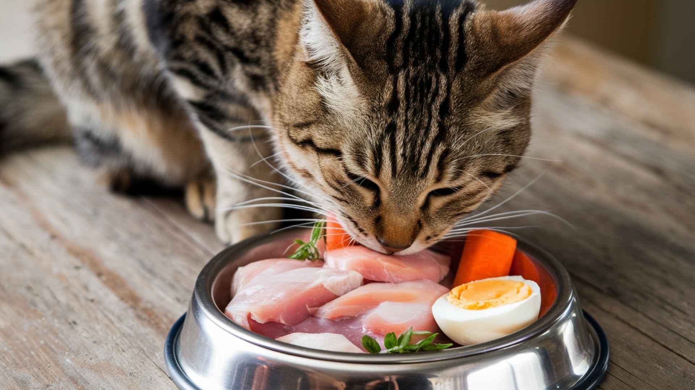
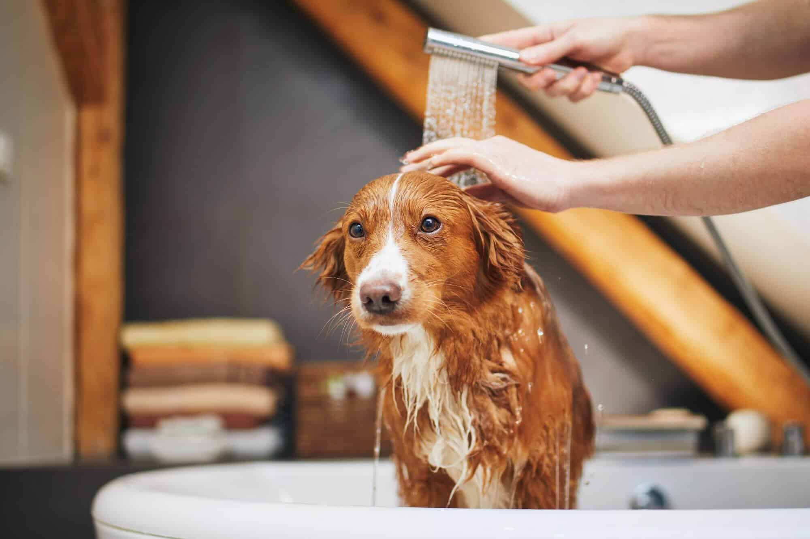
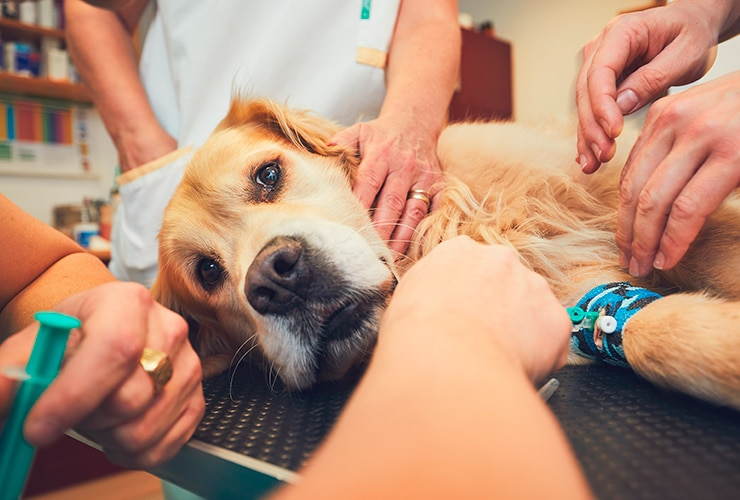

Bienestar

El cuidado de los perros y gatos es una responsabilidad que requiere atención diaria, conocimiento y, sobre todo, amor. Una mascota no es un objeto, es un ser vivo que depende de ti para vivir sano, seguro y feliz. Esta guía reúne información esencial y consejos prácticos para garantizar el bienestar de tu compañero de cuatro patas.
El bienestar animal incluye una buena alimentación, higiene, ejercicio, atención veterinaria y un ambiente libre de estrés. Tanto perros como gatos requieren un lugar limpio, cómodo y seguro donde descansar, así como rutinas estables que les brinden confianza.
El contacto humano, el juego y la socialización son vitales para su salud emocional. Una mascota que se siente querida desarrolla menos problemas de conducta y vive más tranquila.
La dieta debe adaptarse a la edad, tamaño, peso y estado de salud de tu mascota. Los perros suelen necesitar alimento balanceado rico en proteínas y carbohidratos de calidad. Los gatos, por su parte, requieren principalmente proteínas de origen animal y taurina, un aminoácido esencial para su organismo.
Evita darles chocolate, uvas, cebolla, ajo, huesos pequeños o comida muy condimentada, ya que son tóxicos. El agua fresca debe estar siempre disponible, y es recomendable servir sus raciones en horarios fijos para evitar la obesidad.
Cepilla a tu mascota regularmente para mantener su pelaje sano y libre de enredos. Los perros requieren baños periódicos con shampoo especial, mientras que los gatos suelen limpiarse solos, aunque algunos necesitan cepillado extra. El corte de uñas, la limpieza de orejas y dientes son igualmente importantes.
Revisa su piel en busca de pulgas, garrapatas o heridas. Mantener la cama y los juguetes limpios también es clave para prevenir enfermedades.
El veterinario debe ser un aliado en el cuidado de tu mascota. Es recomendable hacer chequeos anuales y cumplir con las vacunas obligatorias: moquillo, parvovirus, rabia y otras según la región. La desparasitación interna y externa debe hacerse de forma periódica.
La esterilización no solo ayuda a controlar la población, también previene enfermedades y mejora la conducta. Además, no olvides consultar siempre al especialista antes de introducir nuevos alimentos o medicamentos.

Los perros necesitan paseos diarios para ejercitar su cuerpo y mente. Además, socializar con otros perros evita problemas de agresividad y ansiedad. Los gatos, aunque no requieren paseos, sí necesitan estímulos como rascadores, juguetes y espacios donde trepar.
El ejercicio regular ayuda a mantener un peso saludable y fortalece el vínculo entre mascota y dueño.
Es fundamental saber cómo actuar ante emergencias. Si tu mascota se corta, limpia la herida con agua y jabón neutro, aplica un desinfectante suave y cúbrela con una gasa limpia. Nunca uses alcohol puro o yodo en exceso, ya que puede irritar la piel.
En caso de intoxicación, dificultad para respirar, fracturas o sangrados abundantes, acude inmediatamente al veterinario. Siempre ten a mano el número de una clínica de urgencias.
Contar con un botiquín básico (gasas, suero fisiológico, vendas, termómetro digital y antiparasitarios) puede salvar la vida de tu mascota en situaciones críticas.
Cuidar de un perro o gato implica mucho más que alimentarlos. Requiere atención, paciencia y compromiso. Un tutor responsable garantiza bienestar físico, emocional y social, además de ofrecer seguridad y amor constante.
Recordemos que nuestras mascotas dependen de nosotros. Una buena alimentación, higiene, atención médica y tiempo de calidad son claves para que vivan largas y felices vidas.